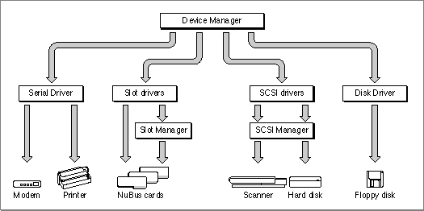

Legacy Document
Important: The information in this document is obsolete and should not be used for new development.
Important: The information in this document is obsolete and should not be used for new development.


Introduction to Devices and Drivers
A device is a physical part of the Macintosh, or a piece of external equipment, that can exchange information with applications or with the Macintosh Operating System. Input devices transfer information into the Macintosh, while output devices receive information from the Macintosh. An I/O device can transfer information in either direction.Devices transfer information in one of two ways. Character devices read or write a stream of characters, or bytes, one at a time. Character devices provide sequential access to data--they cannot skip over bytes in the data stream, and cannot go back to pick up bytes that have already passed. The keyboard and the serial ports are examples of character devices.
Block devices read and write blocks of bytes as a group. Disk drives, for example, can read and write blocks of 512 bytes or more. Block devices provide random access to data--they can read or write any block of data on demand.
Devices communicate with applications and with the Operating System through special programs called device drivers. A device driver typically controls a specific hardware device, such as a modem, hard disk, or printer. This type of device driver acts as a translator, converting software requests into hardware actions and hardware actions into software results. Figure 1-1 illustrates some of the hardware devices that communicate with the Macintosh through device drivers.
Figure 1-1 Devices and the Macintosh

Macintosh device drivers may be either synchronous or asynchronous. A synchronous device driver completes a requested transaction before returning control to the Device Manager. An asynchronous device driver can initiate a transaction and return control to the Device Manager before the transaction is complete. This type of device driver usually relies on interrupts from a hardware device to regain control of the processor and complete the transaction.
The Macintosh ROM and system software contain device drivers for controlling the standard devices included with every Macintosh computer, such as the mouse, serial ports, and floppy disk drive. Before deciding to write your own device driver, you should consider whether your device can be accessed using one of the standard device drivers. The section "Writing a Device Driver," beginning on page 1-24, discusses the reasons why you may want to use a standard device driver rather than writing your own.
Although device drivers are often used to control hardware, they are not restricted to this function. For example, Macintosh desk accessories and Chooser extensions are small programs that are written as device drivers, even though they may have nothing to do with controlling hardware. In general, a device driver is a program that conforms to a standard interface and provides access to a service through a standard set of routines. Your program can take advantage of this interface to perform tasks unrelated to actual physical devices.